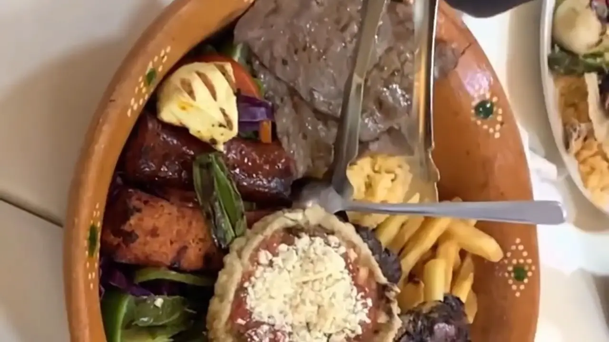
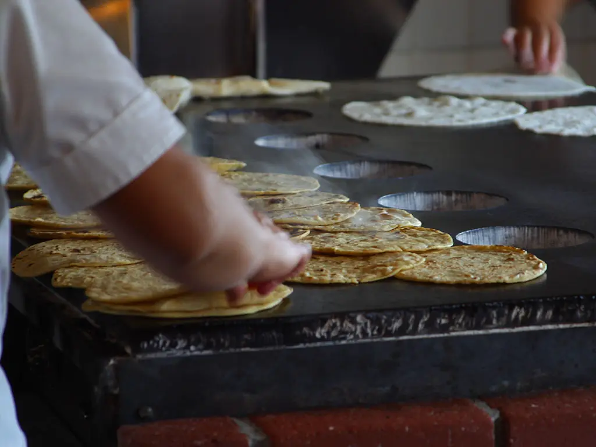
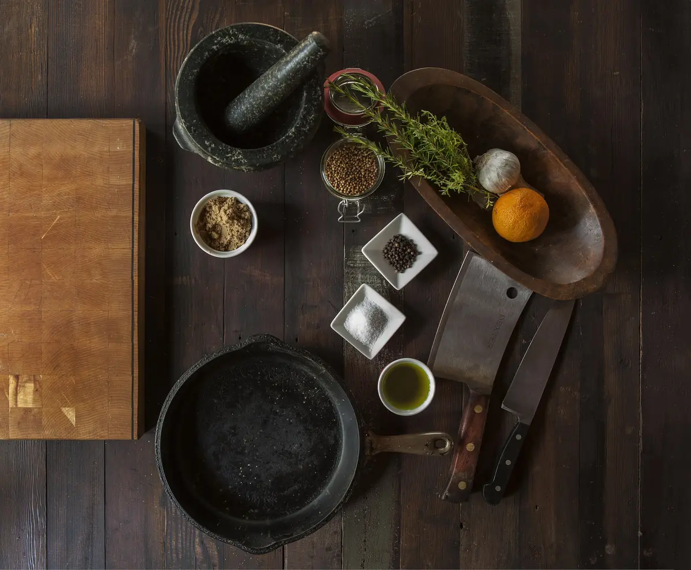
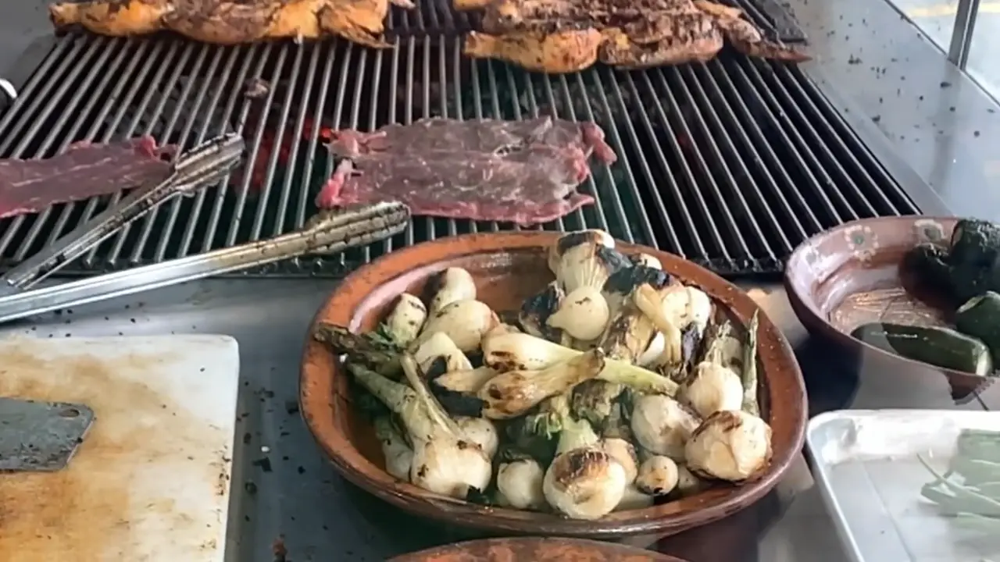
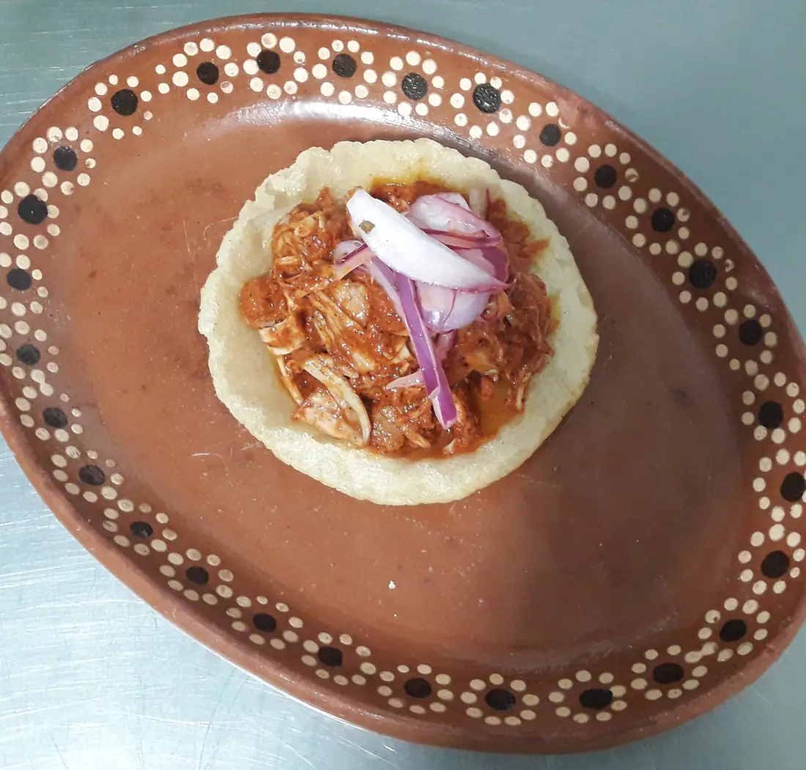
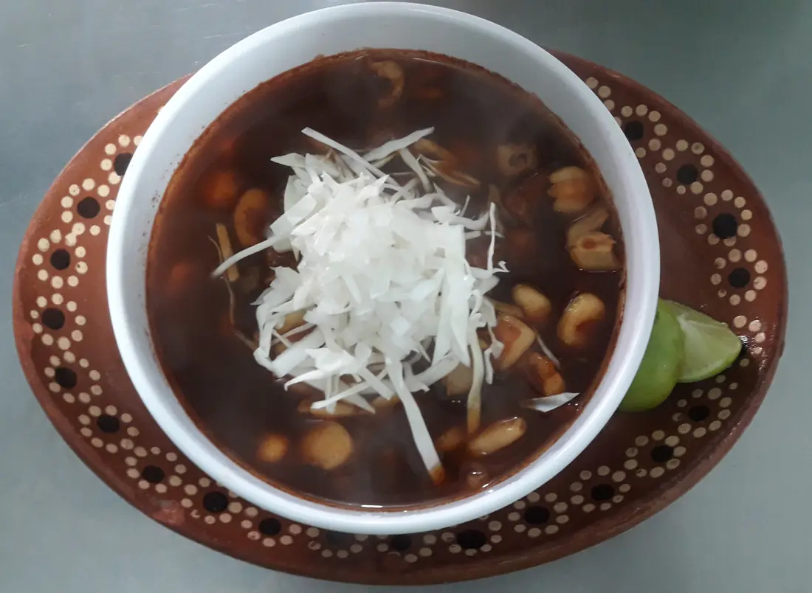
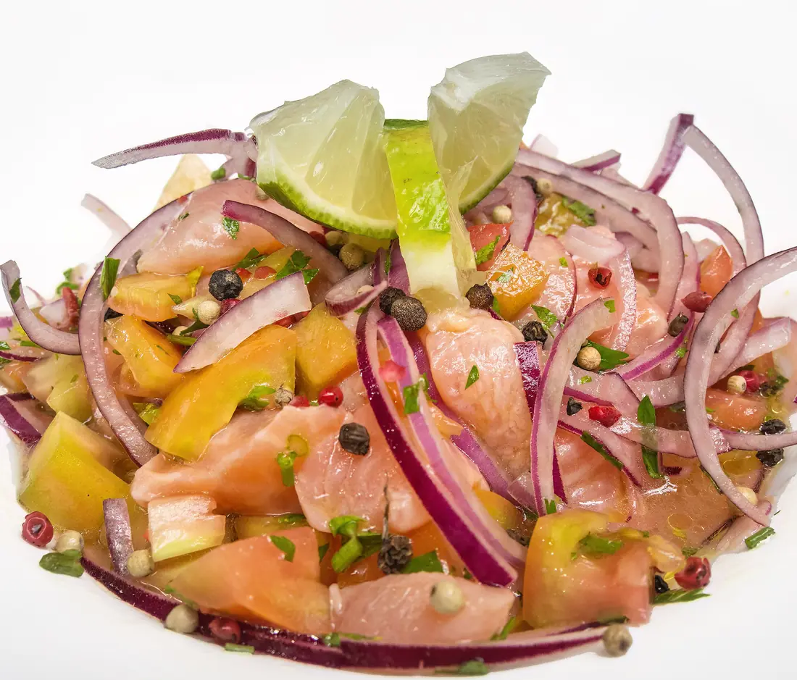
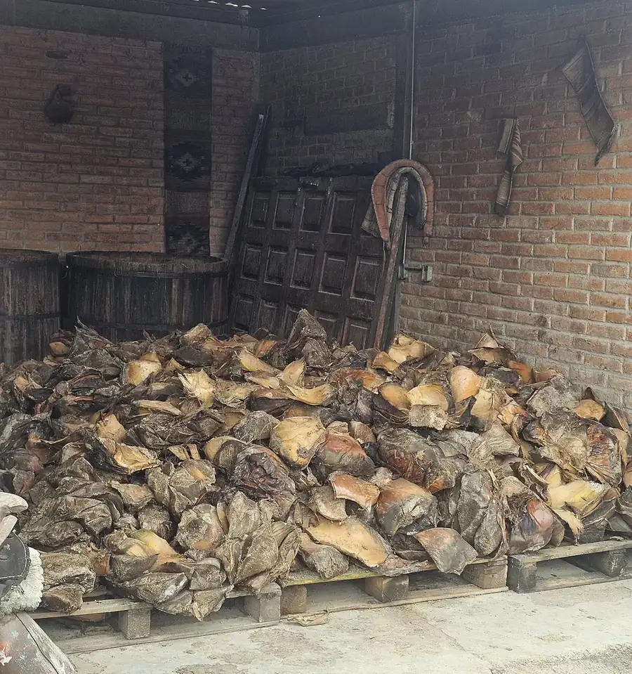
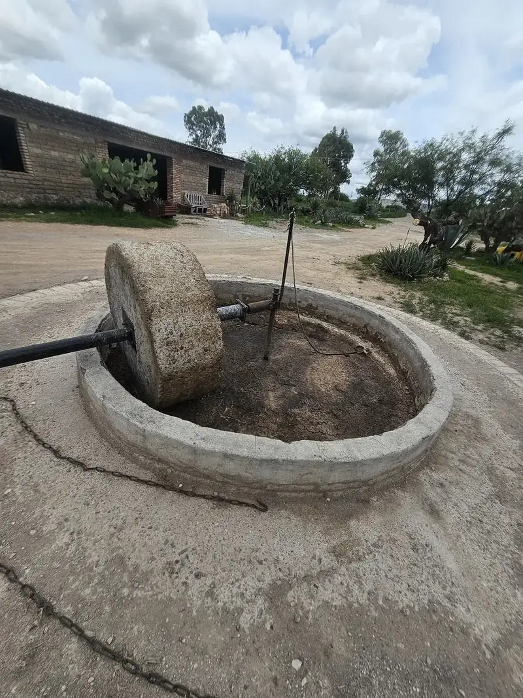
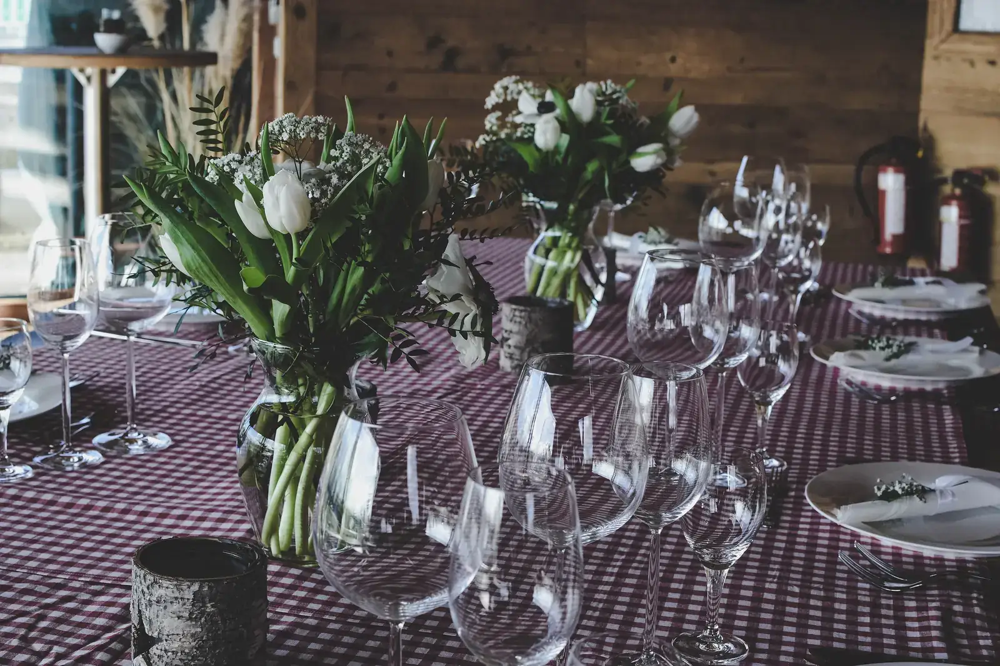

Casa Molina
300 W Main St, Norman, OK 73069 · Comida y cena, de martes a domingo
Prendemos el carbón a las diez.
Carbón de mezquite, todas las mañanas. La arrachera, el pollo adobado, las cebollitas y los nopales entran antes de que llegue la gente a comer.
Y de ahí, directo a tu mesa.
El molcajete llega hirviendo y las tortillas salen del comal todo el día.
Video de muestra en lugar de los 3 videos con IA que incluye este plan.
Una cocina familiar, como la llevaba mi abuela.
Hacemos las tortillas a mano todo el día, molemos las salsas en molcajete y preparamos el mole con la receta de doña Rosa, la misma que cocinaba en Tlacolula, Oaxaca.
Ven a comer y quédate a un mezcalito. Los niños son bienvenidos, y el domingo, toda la familia.
Lupe y Javier MolinaDueños


Lo que la gente vuelve a pedir.
- 01

Molcajete MolinaPara dos. Arrachera, pollo adobado, chorizo, nopales y cebollitas, hirviendo en su salsa.$42 - 02

Sopes de cochinitaSopes de masa, cochinita en achiote, cebolla morada curtida.$10 - 03
 Tacos de pulpoPulpo enchilado en guajillo, crema de aguacate, en tortilla hecha aquí.$17
Tacos de pulpoPulpo enchilado en guajillo, crema de aguacate, en tortilla hecha aquí.$17 - 04
 Mole negroEl mole oaxaqueño de doña Rosa, pollo, arroz y tortillas.$21
Mole negroEl mole oaxaqueño de doña Rosa, pollo, arroz y tortillas.$21 - 05

Pozole rojoSábados y domingos. Cerdo y maíz pozolero en chile rojo, rábano y orégano.$15 - 06

Aguachile verdeCamarón curtido en limón y serrano, pepino y cebolla morada.$16
Mezcal de palenques familiares.
Nuestra hija Ana le compra a las familias que lo hacen: agave cocido en horno de tierra, molido con tahona de piedra y destilado en lotes chicos. Lo servimos en copita con naranja y sal de gusano, como se toma allá.



El salón de atrás es tuyo por una noche.
Cumpleaños, cenas de ensayo, graduaciones y cenas de oficina. También llevamos taquizas por todo el condado de Cleveland.
Aquí te esperamos.
Dónde
300 W Main St, Norman, OK 73069
En el centro, sobre Main Street. Estacionamiento gratis en la calle.
Cómo llegarHorario
| Martes a jueves | 11 a.m. – 9 p.m. |
| Viernes y sábado | 11 a.m. – 10 p.m. |
| La barra (vie y sáb) | hasta medianoche |
| Domingo | 11 a.m. – 8 p.m. |
| Lunes | Cerrado |